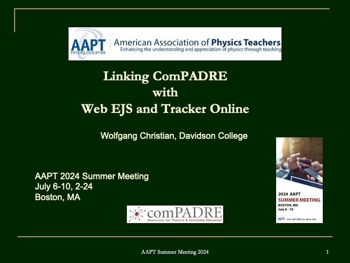

The ComPADRE OSP digital library distributes hundreds of Tracker video experiments and EJS JavaScript simulations that were created with our desktop Java-based authoring tools, EJS and Tracker. These authoring applications run on OS X, Windows, and Unix computers, but some schools no longer allow Java to be installed on computers and Java programs will not run on mobile devices and Chromebooks.
To solve these problems, the OSP team has developed JavaScript versions of EJS and Tracker. These web-based versions do not require the installation of additional software. They are compatible with existing examples and can load source files directly from ComPADRE into the new web-based versions of EJS and Tracker.